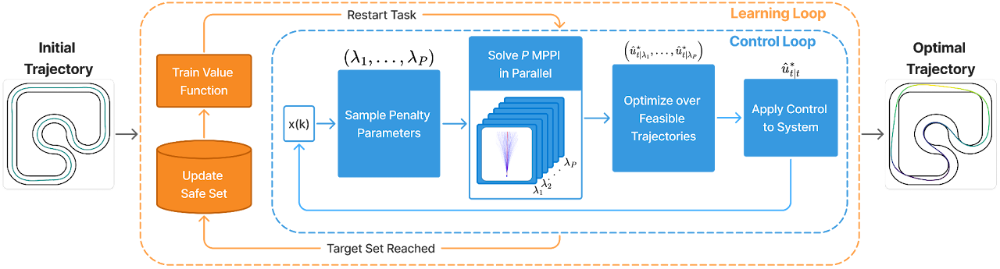

Structure

SIT-LMPC architecture: starting from an initial trajectory, the algorithm iteratively updates the safe set and value function model (orange loop), while solving multiple MPPI problems in parallel (blue loop) to generate optimal trajectories. Each MPPI problem corresponds to one set of sampled penalty parameters λi, whose solutions are then filtered and optimized over to ensure optimality while satisfying the constraints
Simulated Experiment
Recorded video of the experiments on map 1: Left: live simulation of the vehicle, displaying planned trajectory in MPPI horizon (yellow), and the control invariant safe set (pink). Right: Speed profile showing the evolution of trajectories.
Real-world Experiment
Publications
- SIT-LMPC: Safe Information-Theoretic Learning Model Predictive Control for Iterative Tasks
Zirui Zang, Ahmad Amine, Nick-Marios T. Kokolakis, Truong X. Nghiem, Ugo Rosolia, Rahul Mangharam
IEEE Robotics and Automation Letters, 2026, Volume 11, Issue 1, Pages 986-993.
Link to Paper
Contributors
Zirui Zang, Ahmad Amine, Nick-Marios T. Kokolakis, Ugo Rosolia, Truong X. Nghiem, Rahul Mangharam
Citation
@ARTICLE{11260933,
author={Zang, Zirui and Amine, Ahmad and Kokolakis, Nick-Marios T. and Nghiem, Truong X. and Rosolia, Ugo and Mangharam, Rahul},
journal={IEEE Robotics and Automation Letters},
title={SIT-LMPC: Safe Information-Theoretic Learning Model Predictive Control for Iterative Tasks},
year={2026},
volume={11},
number={1},
pages={986-993},
keywords={Trajectory;Costs;Predictive control;Stochastic processes;Safety;Information theory;Cost function;Stochastic systems;Prediction algorithms;Real-time systems;Iterative learning control;robot learning;stochastic systems;trajectory optimization},
doi={10.1109/LRA.2025.3634881}}